Обзор
Разделы
Ниже вы найдете информацию о том, как настроить вложение VCloth 2.0. Имейте в виду, что поиск подходящего набора параметров требует времени и большого количества тестов и экспериментов. Всегда проверяйте фактическую конфигурацию на соответствие имеющимся у вас анимациям. Как правило, чем быстрее движется персонаж или какая-либо часть тела, тем точнее должна быть настройка; и чем больше анимаций вы хотите воспроизвести на персонаже, тем больше времени занимает настройка, поскольку вам придется тестировать больше конфигураций.
В следующих параграфах описывается использование ткани в CRYENGINE. После экспорта из Maya ткань полностью устанавливается в Character Tool.
Прежде чем продолжить, вам необходимо настроить одежду в Maya и экспортировать ее в файл *.skin. Подробно процесс экспорта описан на следующей странице: Maya – экспортировать VCloth в CRYENGINE..
Поскольку ткань необходимо шкурить в соответствии с используемым персонажем, вы не можете просто менять одежду между персонажами, если у них разные стыки - в этом случае вам придется перекрашивать ткань каждому персонажу отдельно (см. Как экспортировать VCloth из Maya в CRYENGINE).
Обязательно загрузите уровень, иначе вложение VCloth может отображаться неправильно.
Настройка персонажа
1. Сначала загрузите своего персонажа без одежды, как обычно, в Character Tool:
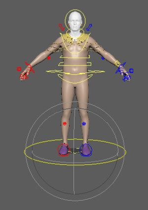
2. Добавьте новое вложение:
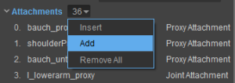
3. Назовите вложение и установите Тип чтобы VCloth 2.0 Вложение:
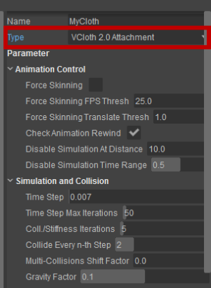
4. Прокрутите вниз до Отладка подменю и добавьте renderMeshName, привязку к скину, simMeshName, simBinding и файл материала:
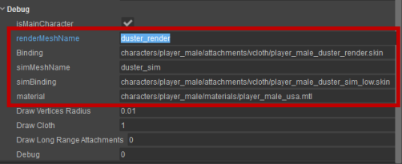
(вы также можете напрямую изменить соответствующий файл *.cdf, который по сути представляет собой файл *.xml, если вам это больше подходит)
Если вы захотите изменить соответствующий файл *.cdf напрямую — содержимое, принадлежащее VCloth, будет выглядеть примерно так:
<Attachment Type="CA_VCLOTH" AName="MyCloth" forceSkinning="0" forceSkinningFpsThreshold="25" forceSkinningTranslateThreshold="1"
checkAnimationRewind="1" disableSimulationAtDistance="10" disableSimulationTimeRange="0.5" timeStep="0.0070000002" timeStepMax="50"
numIterations="5" collideEveryNthStep="2" collisionMultipleShiftFactor="0" gravityFactor="0.1" stretchStiffness="1" shearStiffness="0" bendStiffness="0" bendStiffnessByTrianglesAngle="0" pullStiffness="0" friction="0" rigidDamping="0" springDamping="0"
springDampingPerSubstep="0" collisionDampingTangential="0" longRangeAttachments="0" longRangeAttachmentsAllowedExtension="0"
longRangeAttachmentsMaximumShiftFactor="0.25" longRangeAttachmentsShiftCollisionFactor="0.5" resetDampingFactor="0" resetDampingRange="3"
translationBlend="0" rotationBlend="0" externalBlend="0" maxAnimDistance="0" filterLaplace="0" isMainCharacter="1" renderMeshName="" Binding=""
simMeshName="" simBinding="" Material="" debugDrawVerticesRadius="0.0099999998" debugDrawCloth="1" debugDrawLRA="0" debugPrint="0" hide="0"/>
5. Теперь сохраните файл персонажа и перезагрузите его — теперь ткань должна быть видна с установленными параметрами по умолчанию.
Столкновения
Прокси-серверы столкновений
VCloth требуется дополнительная, явная настройка прокси-сервера коллизий. Таким образом, поведение ткани можно точно настроить в соответствии с персонажами и анимацией, а обработку столкновений можно выполнять эффективно.
Устранение столкновений с тканью — дорогостоящий процесс. Поэтому обязательно настраивайте только те прокси, которые действительно необходимы. Чем меньше прокси, тем быстрее обработка коллизий.
Обработка столкновений осуществляется с помощью ромбов в качестве прокси-серверов столкновений — это гибкие геометрические объекты, которые можно настроить, используя всего четыре числа. С помощью ромбов можно описывать сферы, капсулы, коробки и другие геометрические объекты. Чтобы узнать, как настроить Lozenges в CRYENGINE, перейдите по этой ссылке: Настройка пастилки.
Как настроить прокси-сервер коллизий
Чтобы визуализировать ваши прокси, включите Вторичная анимация -> Тканевые прокси в Параметры отображения меню:
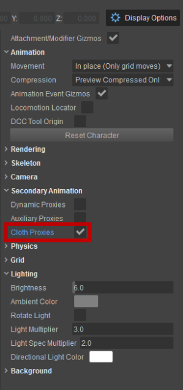
- В свойствах нажмите Вложения -> Добавить
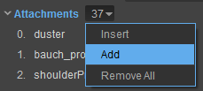
- Будет создано новое вложение. Теперь вы можете назвать его:
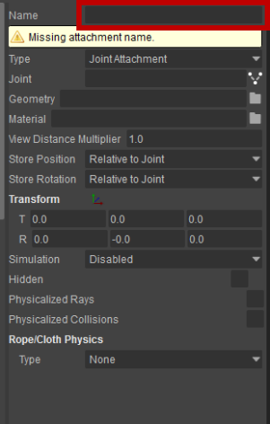
3. Для Тип, выберите ProxyAttachment
4. Для Цель, выбирай Ткань
5. Выберите соединение, которое будет родительским для прокси. Теперь ваше вложение должно выглядеть примерно так:
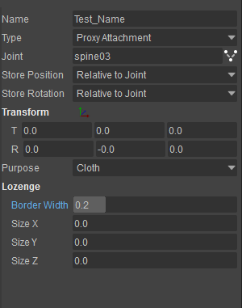
6. Установите параметры трансформации и ромба в соответствии с вашим персонажем. Вы можете использовать мышь в окне просмотра, чтобы трансформировать прокси прямо на персонаже.
7. Наконец, ваша сцена должна выглядеть примерно так, как показано на рисунке ниже:
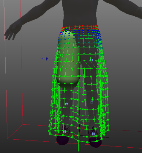
Теперь повторите процесс для всех частей тела, которые необходимы для обработки столкновений ткани.
Алгоритм обработки столкновений гарантирует, что вершины ткани никогда не окажутся внутри одного из прокси-серверов Lozenge Collision. Таким образом, вы должны убедиться, что ромбы правильно аппроксимируют персонажа. Для достижения наилучших результатов рекомендуется настроить Ромбики таким образом, чтобы персонаж полностью лежал внутри прокси. Имейте в виду, что вершины ткани всегда будут находиться поверх прокси, тогда как края могут пересекать прокси. Если до обработки столкновений вершина находится внутри одного прокси (например, из-за быстрых движений частей тела), вершина проецируется на поверхность прокси.
Всегда проверяйте настройку прокси с анимацией персонажа. Во время анимации проблемы с настройкой прокси-сервера быстро станут очевидными. Как правило, лучше создавать довольно грубые и большие прокси, чем пытаться очень точно приблизить позу персонажей. Большие прокси лучше работают во время анимации. В конце концов, грубая настройка прокси-сервера на практике работает на удивление хорошо. Кроме того, если вы используете прямоугольники в качестве прокси, всегда используйте радиус ромба, чтобы скруглить края ящика. В противном случае вершины ткани могут застрять на твердых краях и не будут плавно перемещаться по краям.
На рисунке выше прокси-серверы коллизий не установлены. Ткань удерживается только прикрепленными вершинами и не взаимодействует с телом (см. пересечения с ногами).
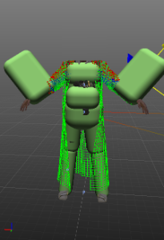 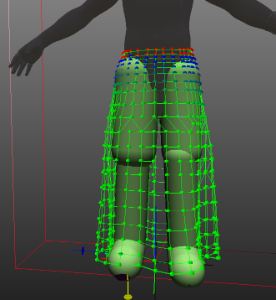
На картинке выше примерная настройка прокси (слева) обеспечивает взаимодействие ткани с телом. Руки обычно приводят к проблемам с пересечением (особенно когда персонаж бежит); большие прокси могут решить эту проблему на практике. Однако из-за сложности движений и иногда пересечений с телом для улучшения устойчивости часто рекомендуют вообще не использовать прокси для рук.
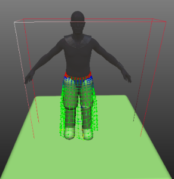
Простой прокси пола движется вместе с персонажами и хорошо работает на плоских поверхностях.
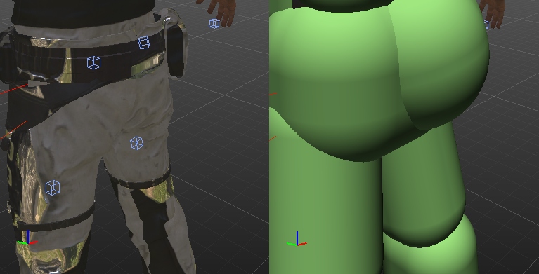
Достаточно грубые прокси обычно работают лучше во всех возможных ситуациях, чем филигранные и точные.
Самостолкновения
VCloth 2.0 не обрабатывает самостолкновение ткани. Правильная самосталкивающаяся ткань стоит дорого, часто нестабильна в определенных ситуациях и в большинстве случаев просто не нужна и не стоит потери производительности. Обычно ситуаций самостолкновений можно избежать, используя прикрепленные/ограничивающие вершины ткани (например, в случае морщин на руках). Другие особые случаи, например две юбки, лежащие друг на друге, невозможно смоделировать с помощью VCloth. Если вам нужны такие особые случаи, вам придется спроектировать эти части ткани, используя стандартные подходы анимации и скининга..
Настройка параметров
Настройки по умолчанию довольно безопасны и должны, по крайней мере, привести к стабильной симуляции, хотя полученная ткань будет очень эластичной. Дано подробное описание всех параметров. здесь, но наиболее важные из них обсуждаются ниже.
Давайте настроим параметры для достижения лучших результатов (также имейте в виду, что вам необходимо настроить некоторые прокси-серверы коллизий, как описано выше в разделе Столкновения.
- Установить Временной шаг до 0,01, это также должно быть безопасно. Если ваша симуляция становится нестабильной, уменьшите это значение.
- Добавьте немного трения, установив Трение до 0,01
- Попробуйте уменьшить Сборка/Итерации жесткости до 3, например. Если ваша симуляция становится нестабильной, снова увеличьте это значение.
- Добавьте немного Сдвиговая жесткость и Жесткость изгиба - установите эти значения, например, на 0,5
Теперь посмотрите на анимацию вашего персонажа, как ведет себя ткань?
- Слишком легкий/тяжелый? -> увеличить/уменьшить Фактор гравитации
- Хорошо ли обрабатываются столкновения? Если нет, уменьшите Сталкивайтесь на каждом n-м шаге, увеличить Сборка/Итерации жесткости
- Ткань ведет себя так, как вы ожидаете? Если нет, поиграйтесь с параметрами в Жесткость и эластичность.
- Твик Трение и Жесткое демпфирование
Это самые важные параметры. В идеале должна быть возможность настроить подходящую ткань, используя только вышеупомянутые параметры.
Если ваша ткань высокого разрешения, но все еще слишком эластична, попробуйте NNDC — ограничения расстояния до ближайшего соседа, это сложный алгоритм, позволяющий сильно снизить эластичность. Это может сработать или нет — это зависит от топологии вашей ткани. Но если это работает, вы обычно можете уменьшить значения в Жесткость и эластичность и, что более важно для производительности, количество Сборка/Итерации жесткости.
Если вы используете Ограничения на расстояние до ближайшего соседа (NNDC), имейте в виду:
- CRYENGINE реализует значительно улучшенную адаптацию NNDC. Они используются для обеспечения удлинения ткани. Следовательно, это сильно снижает эластичность/пружинистость ткани.
- NNDC используют топологию сетки для уменьшения эластичности вдоль путей к ближайшему ограничению/прикрепленным вершинам. В зависимости от вашей сетки это может работать впечатляюще.
- Оставьте параметр NNDC сдвиг коэффициента столкновения не трогал на 1.0 - иначе может быть мерцание.
- NNDC разрешено расширение также следует оставить значение 0,0, так как с этим значением оно работает вполне нормально.
Улучшения производительности
Вопросы производительности
Настройка сетки моделирования
- Меньше вершин = выше производительность
- Попробуйте моделировать однородные правильные четверки. Ткань — это однородный материал, и сама топология сетки имеет решающее значение для представления этого факта и оказывает сильное влияние на саму анимацию ткани.
- Прикрепленные вершины должны располагаться над кожей тела. Таким образом, можно избежать пересечений с кожей тела, поскольку присоединенные вершины остаются static над кожей во время моделирования.
- Избегайте одиночных вершин, которые не прикреплены между двумя полностью присоединенными вершинами. Таким образом, можно избежать дрожания единственной неприсоединенной вершины.
Прокси-серверы столкновений
- Меньше прокси = выше производительность (прокси довольно дорогие, процесс обработки столкновений — самый дорогой процесс в симуляции ткани)
- Даже не пытайтесь установить их точно. Просто сделайте их больше, чем кожа тела, используйте только по одному для каждой части тела. Им не обязательно быть невероятно точными, чтобы все выглядело реалистично. Чем они больше, тем выше вероятность того, что в сумасшедшей анимации персонажей не возникнет нежелательных артефактов.
- Небольшие выпуклости на коже, которые должны обрабатываться при столкновениях (например, прикрепленный рюкзак), требуют отдельных прокси. В зависимости от разрешения ткани они могут быть намного больше, чем сам объект (чтобы избежать пересечения ткани и объекта).
- Руки и кисти — в большинстве быстрых анимаций (например, бега) они движутся очень быстро. Постарайтесь, чтобы это выглядело хорошо без прокси для рук и кистей. Обычно это будет выглядеть хорошо. Если ты действительно если они нужны, сделайте их намного больше тела. Для рук попробуйте использовать большие сферы или большую коробку.
Таблица производительности
В следующей таблице представлен обзор наиболее важных аспектов производительности, связанных с настройками параметров. Производительность моделирования VCloth сильно зависит от вашей конфигурации.
Контекст/параметр | Стоимость/Размер | Производительность | Идеальный диапазон значений |
|---|---|---|---|
Моделирование сетки | Меньше вершин | выше | ок. 500 - 1500 |
Количество итераций сборки/жесткости | Меньший | выше | 3-4 |
Количество прокси-серверов коллизий | Меньший | выше | 8 -12 |
Ограничения на расстояние до ближайшего соседа | Включить | Равенство, но гораздо более жесткая ткань возможно | Включить Если ткань мерцает, вам нужно отключить это значение и настроить жесткость с помощью Жесткость и эластичность значения и увеличения нет. итераций с Сборка/Итерации жесткости. |
Визуальная обратная связь/отладка
Отладка с использованием переменных консоли
- Снятие шкур:
- ca_DebugSWSkinning
Включив эту переменную, можно изучить скин сетки рендеринга.
- ca_DebugSWSkinning
- Моделирование:
- ca_DrawCloth
Установите для этой переменной значение 2 использовать функции визуальной отладки вложения VCloth 2.0 в Character Tool - (можно найти в Отладка раздел в Параметры во вложении).
- ca_DrawCloth
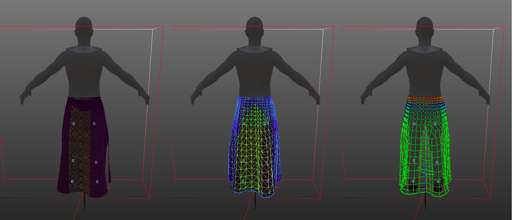
Слева: оригинал
Средний: ca_DebugSWSkinning включено [снятие скинов]
Правильно: ca_DrawCloth = 2 [моделирование] (Результат зависит от параметров отладки вложения)
Отладка моделирования
Чтобы визуализировать данные моделирования, убедитесь, что для ca_DrawCloth установлено значение 2.
Влияние каждого из этих параметров описано ниже.
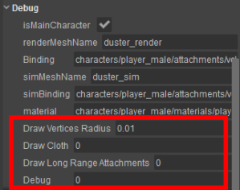
Нарисовать радиус вершин
Убедитесь, что консольная переменная ca_DrawCloth установлено на 2.
Изменить радиус нарисованных вершин
Цветовое кодирование: зеленый (неограниченный), от зеленого до синего (интенсивность ограничения), красный (полностью ограниченный).
Различные размеры радиуса вершин рисования: 0,01 (слева), 0,02 (посередине), 0,04 (справа) — цвета обозначают силу ограничения. 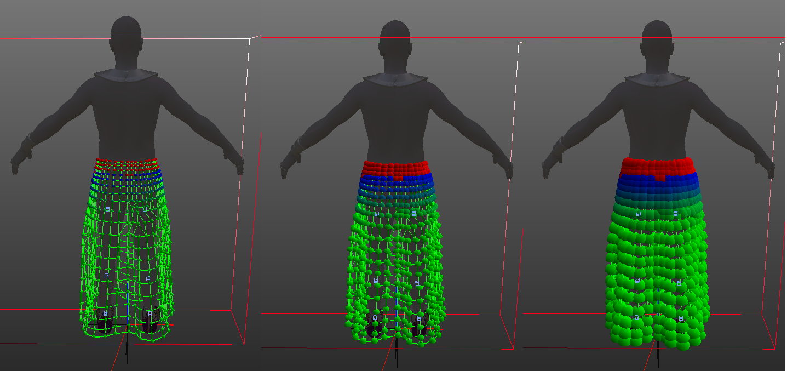
Параметр: Ткань для рисования
Убедитесь, что консольная переменная ca_DrawCloth установлено на 2.
Используя этот параметр, можно включить детальную визуализацию сгенерированных данных моделирования.
- 1 - нарисовать растягивающиеся звенья
- 2 - нарисовать срезные звенья
- 3 - нарисовать звенья изгиба
- 4 — нарисуйте все звенья (растяжение, сдвиг и изгиб)
- 6 - отрисовать позиции частиц (позиция симуляции и позиция скина, дополнительно позиция предыдущего шага)
- 7, 8, 9, 10 - рисуем заданные треугольники изгиба, в том числе действительные нормали разной длины (7..10 - в порядке убывания)
Слева: Растянуть ссылки (Параметр: 1); Справа: звенья «Растягивание», «Сдвиг», «Изгиб» (параметр: 4). 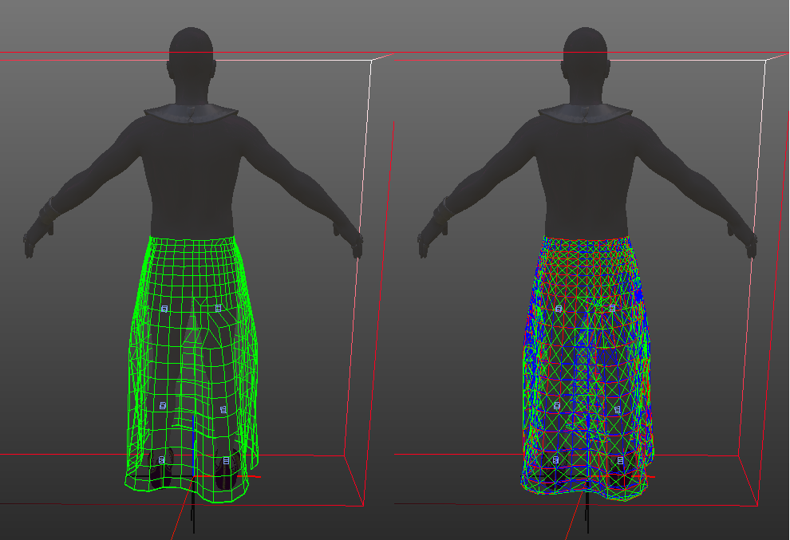
Сгибание треугольников 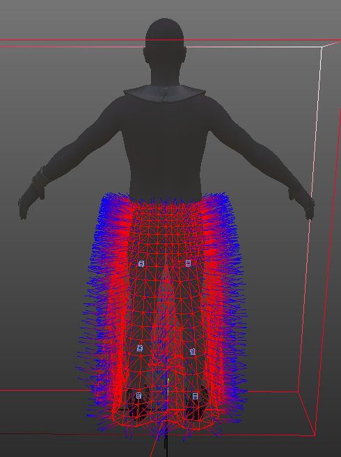
На рисунке выше нарисованы все ребра между двумя соседними треугольниками, а также все нормали каждого треугольника.
Параметр: Нарисовать ограничения расстояния до ближайшего соседа
Убедитесь, что консольная переменная ca_DrawCloth установлено на 2.
Используя этот параметр, можно включить детальную визуализацию сгенерированных данных об ограничениях расстояния до ближайшего соседа.
- 1 — для каждой вершины нарисуйте ближайшую 100% присоединенную вершину.
- 2 — для каждой вершины нарисуйте ближайшую 100% присоединенную вершину (в порядке расстояния до ближайшей присоединенной вершины)
- 3 - для каждой вершины нарисуйте соединение со следующим соседом, которое следует по пути через сетку моделирования до ближайшей 100% присоединенной вершины.
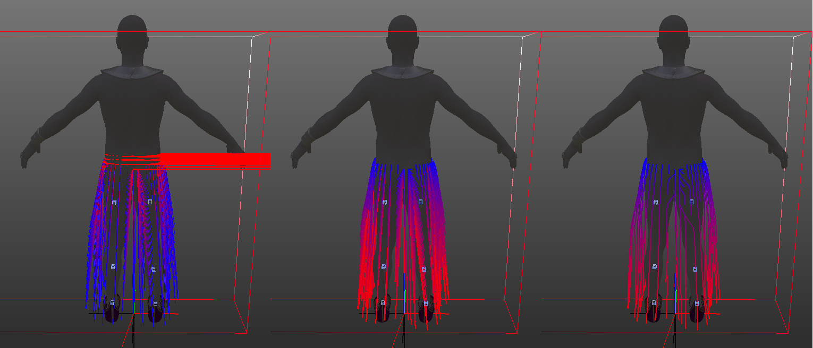
Слева: Параметр: 1 - Ближайшая присоединенная вершина (если вершина присоединена или соединение не обнаружено (например, несвязанные острова), справа рисуется красная линия); Средний: Параметр: 2 - Ближайшая присоединенная вершина, упорядоченная по расстоянию);
Правильно: Параметр: 3 - Следующий сосед на пути к ближайшей присоединенной вершине - если это соединение не приводит к образованию прямых линий, ограничения расстояния до ближайшего соседа следует отключить.
Параметр: Отладка
Убедитесь, что консольная переменная ca_DrawCloth установлено на 2.
Этот параметр показывает некоторые подробные значения:
- 1 - показывает шаг по времени, нормализованное время, количество шагов
- 2 - вывести консольное сообщение: нормализованное время
- 3 - вывести консольное сообщение: позиция глобального локатора связанного символа
Похожие страницы
Для получения дополнительной информации о том, как использовать VCloth, посетите следующие страницы:
VCloth 2.0